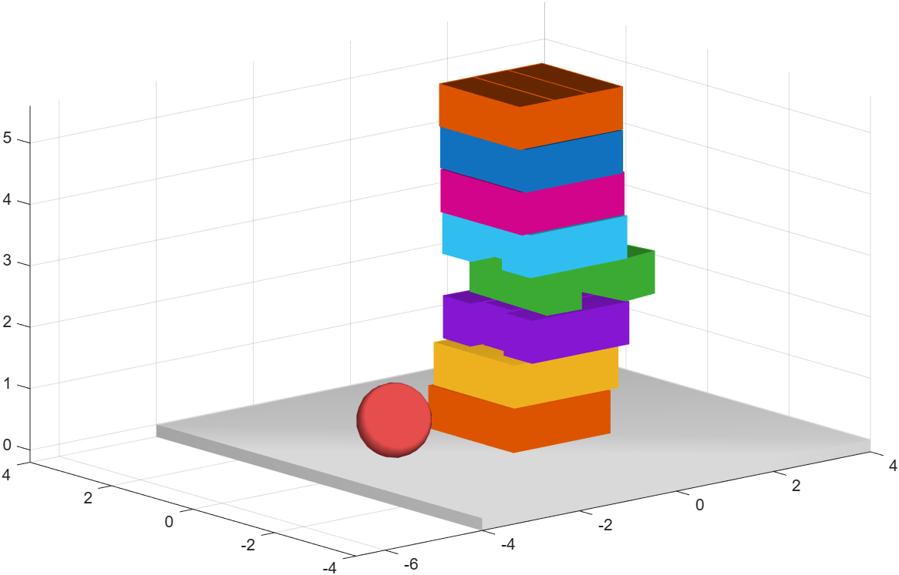
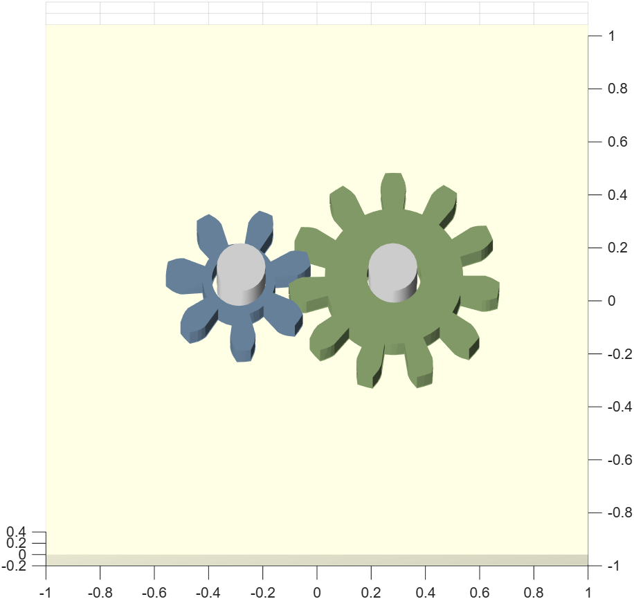
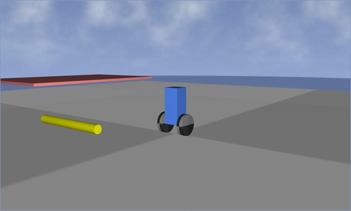

The shipped demos and a complete self-balancing robot walkthrough
The same building blocks scale up to large scenes. Two examples from the shipped demos:

phxex_jenga.
phxex_gears.Other possibilities include several independent simulations side by side, multiple views of a single scene, textures and a sky, terrain, conveyors, suspended vehicles, feedback controllers, or optimization running without rendering (headless).
The examples are the best way to learn — you run them with a single command and study the source code. Recommended to begin with:
| Command | What it shows |
|---|---|
| phxex_minimal | The bare minimum — a body and a floor. |
| phxex_shapes | A gallery of all primitive shapes. |
| phxex_joints | A hinge and a ball joint. |
| phxex_springs | A spring system with bodies added and removed at runtime. |
| phxex_gravity | Particles orbiting a star. |
| phxex_gears | Two meshing gears. |
| phxex_jenga | An interactive Jenga tower — friction and contacts. |
| phxex_terrain, phxex_textures | Terrain and textures. |
| phxex_buggy, phxex_conveyors | A suspended vehicle, conveyors. |
The same folder also holds more advanced scenes: phxex_segway
(a self-balancing robot), phxex_drone (a quadcopter),
phxex_rocket, phxex_galton
(a Galton board), phxex_magnets (magnetic self-assembly),
phxex_buoyancy (floating bodies),
phxex_gyrostab (a passive gyro stabilizer),
phxex_antisway (a crane anti-sway controller) or
phxex_optimize (optimization without rendering).
An example that combines almost everything from the previous topics into one working whole — a self-balancing two-wheeled robot (a segway). It shows what more complex work with PHX can look like.
The scene is built from ordinary building blocks:
phx.Logger records the body tilt for a
later plot.% --- core of the control loop (runs with a 5 ms step) --- Kp = 4000; Kd = 380; dt = 0.005; sim = phx.Simulation; for k = 1:500 pitch = body.EulerAngles(2); % sensor: body tilt pitchRate = body.AngularVelocity(2); % sensor: tilt rate tau = Kp*pitch + Kd*pitchRate; % PD controller wheelL.applyTorque(-[0 0 tau], true); % control action on the wheels wheelR.applyTorque(-[0 0 tau], true); sim.step(dt, 1, 1); % one simulation step end

phxex_segway shown directly in the interactive PHX viewer
(sky mode). The robot actively keeps itself upright; an obstacle (a ramp) included in the scene
sits in the foreground.The same approach — bodies × joints × sensors × a
phx.Function/control loop — is behind advanced examples such
as phxex_drone (a quadcopter),
phxex_balance (balancing a ball on a plate) or
phxex_rocket. Once you master this skeleton, you can build
practically any controlled mechanism in PHX.
help phx.Body, phxdoc phx.Simulation
or methods phx.Spring. The fastest path to understanding, though, is
to open and tweak one of the examples in the examples/ folder.